Colombia#
República de Colombia, es un país soberano situado en la región noroccidental de América del Sur.
El país es travesado por la cordillera de los Andes y la llanura amazónica, es el único país de América del Sur con costas sobre los océanos Atlántico y Pacífico. Por estar muy cerca del Ecuador en una baja latitud, todos los climas que se presentan en Colombia son isotérmicos, es decir, sin amplitud térmica relevante a lo largo del año.
Por la dinámica del territorio el clima está relacionado con las estaciones según la precipitación (estación seca y estación lluviosa).

Para el análisis se cuenta con 947,790 registros correspondientes a casos ocurridos en alguno de los 32 municipios y el distrito capital de la república de Colombia, representado en 19 variables, en el periodo del año 2013 al año 2023.
# [Configuración] Importar librerías
# Manipulación de datos
import pandas as pd
import numpy as np
# Visualización
import matplotlib.pyplot as plt
import seaborn as sns
import matplotlib.cm as cm
from statsmodels.graphics.tsaplots import plot_acf
# Geoespacial
import geopandas as gpd
from libpysal.weights import Queen
import libpysal
from esda.moran import Moran, Moran_Local
# Estadística clásica y no paramétrica
from scipy import stats
from scipy.stats import chi2_contingency, kruskal, shapiro
import scikit_posthocs as sp # Pruebas post-hoc como Dunn
# Series temporales y detección de rupturas
import ruptures as rpt
from pymannkendall import original_test # Tendencias en series temporales
# [Configuración] Leer data
df = pd.read_csv(r"https://media.githubusercontent.com/media/Darally06/DATOS_DENGUE/refs/heads/main/Data_Colombia.csv")
df['desenlace'] = df['desenlace'].replace('0', 'Fallecido')
# Leer shapefile
gdf = gpd.read_file("Mapas/Departamento/MGN_ADM_DPTO_POLITICO.shp", encoding='utf_8')
gdf = gdf.rename(columns={'dpto_cnmbr': 'departamento'})
semanas = pd.read_csv("Resumen/consolidado_colombia.csv")
casos = pd.read_csv("Resumen/casos_dep_colombia.csv")
poblacion = pd.read_csv("Poblacion/Poblacion_nacional.csv", encoding="latin_1")
df.info()
# [] Convertir fechas a DateTime
columnas_fecha = ["fecha_consulta", "fecha_inicio_sintomas", "fecha_notificacion", "fecha_nacimiento", "fecha_hospitalizacion"]
for col in columnas_fecha:
df[col] = df[col].replace(["--", " - -", "-", " "], pd.NA)
df[col] = pd.to_datetime(df[col], format='mixed')
print(f"Columna '{col}' convertida a datetime.")
Columna 'fecha_consulta' convertida a datetime.
Columna 'fecha_inicio_sintomas' convertida a datetime.
Columna 'fecha_notificacion' convertida a datetime.
Columna 'fecha_nacimiento' convertida a datetime.
Columna 'fecha_hospitalizacion' convertida a datetime.
# [] Valores nulos por variable
faltantes = df.isnull().sum()
print("Valores faltantes por variable: \n")
print(faltantes[faltantes > 0])
Valores faltantes por variable:
fecha_inicio_sintomas 53
fecha_consulta 93
fecha_hospitalizacion 546986
fecha_nacimiento 30088
dtype: int64
1. Descriptivo de variables#
# [Función] Descripción de variables categóricas
def describir_categorica(columna, col_evento="evento"):
tabla = pd.DataFrame({
"Conteo": columna.value_counts(dropna=False),
"Proporción": columna.value_counts(normalize=True, dropna=False).round(4)
})
tabla.index = tabla.index.map(lambda x: "NaN" if pd.isna(x) else x)
crosstab_evento = pd.crosstab(df[columna.name], df[col_evento])
tabla_completa = tabla.join(crosstab_evento)
# Agregar proporciones específicas para 'Clasico' y 'Grave'
if "Clasico" in crosstab_evento.columns:
tabla_completa["Prop_Clasico"] = (tabla_completa["Clasico"] / tabla_completa["Conteo"]).round(4)
else:
tabla_completa["Prop_Clasico"] = 0
if "Grave" in crosstab_evento.columns:
tabla_completa["Prop_Grave"] = (tabla_completa["Grave"] / tabla_completa["Conteo"]).round(4)
else:
tabla_completa["Prop_Grave"] = 0
print(f"\n📌 Variable: {columna.name}")
print(tabla_completa)
print("\n-----------------------------------")
Variables demográficas#
print("DESCRIPCIÓN DE VARIABLES CATEGÓRICAS")
describir_categorica(df["ciclo_vital"])
describir_categorica(df["sexo"])
describir_categorica(df["grupo_etnico"])
describir_categorica(df["regimen_salud"])
DESCRIPCIÓN DE VARIABLES CATEGÓRICAS
📌 Variable: ciclo_vital
Conteo Proporción Clasico Grave Prop_Clasico Prop_Grave
ciclo_vital
Adulto 354522 0.3741 350408 4114 0.9884 0.0116
Adolescencia 268126 0.2829 263627 4499 0.9832 0.0168
Infancia 154053 0.1625 150959 3094 0.9799 0.0201
Primera infancia 101852 0.1075 100013 1839 0.9819 0.0181
Adulto mayor 55679 0.0587 54696 983 0.9823 0.0177
Menor de 1 año 9056 0.0096 8679 377 0.9584 0.0416
Ancianidad 4497 0.0047 4391 106 0.9764 0.0236
Desconocido 5 0.0000 5 0 1.0000 0.0000
-----------------------------------
📌 Variable: sexo
Conteo Proporción Clasico Grave Prop_Clasico Prop_Grave
sexo
Masculino 496587 0.5239 488765 7822 0.9842 0.0158
Femenino 451203 0.4761 444013 7190 0.9841 0.0159
-----------------------------------
📌 Variable: grupo_etnico
Conteo Proporción Clasico Grave Prop_Clasico Prop_Grave
grupo_etnico
Otro 899651 0.9492 885461 14190 0.9842 0.0158
Afrocolombiano 33297 0.0351 32791 506 0.9848 0.0152
Indígena 12280 0.0130 12021 259 0.9789 0.0211
Rom 2562 0.0027 2505 57 0.9778 0.0222
-----------------------------------
📌 Variable: regimen_salud
Conteo Proporción Clasico Grave Prop_Clasico Prop_Grave
regimen_salud
Subsidiado 437391 0.4615 429323 8068 0.9816 0.0184
Contributivo 421207 0.4444 415719 5488 0.9870 0.0130
Excepción 36744 0.0388 36290 454 0.9876 0.0124
No asegurado 31384 0.0331 30732 652 0.9792 0.0208
Especial 15353 0.0162 15065 288 0.9812 0.0188
Indeterminado 5711 0.0060 5649 62 0.9891 0.0109
-----------------------------------
De acuerdo a los registros, la población infectada por dengue en Colombia se encuentra, en mayor medida, en edad adulta (37.4%) o adolescente (28.2%). De los demás grupos, los menores de 1 año y ancianidad son los que proporcionalmente son los más afectados por el dengue grave.
El sexo de los pacientes se distribuye de forma equilibrada, siento el 52.3% masculinos. La pertenencia a grupos étnicas indica que solo el 5.08% pertenecen a algún grupo; cabe detallar que el más del 20% de los casos para población Indígena y Rom corresponden a dengue grave.
La afiliación a regimen de salud de la población es en su mayoría a regimen subsidiado (46.1%) o contributivo (44.4%), sin embargo, los pacientes no asegurados tienen una alta proporción de casos graves.
# [Análisis] Edad de los pacientes
df_edad = df[df["ciclo_vital"] != "Menor de 1 año"].copy()
orden_ciclos_edad = [
"Primera infancia",
"Infancia",
"Adolescencia",
"Adulto",
"Adulto mayor",
"Ancianidad"
]
df_edad["ciclo_vital"] = pd.Categorical(
df_edad["ciclo_vital"],
categories=orden_ciclos_edad,
ordered=True
)
def tabla_descriptiva(df, variable, grupo=None):
"""
Genera una tabla descriptiva (media, mediana, DE, IQR, etc.)
por grupos (ej. ciclo vital).
"""
if grupo:
desc = df.groupby(grupo, observed=True)[variable].agg(
n = 'count',
media = 'mean',
mediana = 'median',
sd = 'std',
q25 = lambda x: np.percentile(x, 25),
q75 = lambda x: np.percentile(x, 75),
minimo = 'min',
maximo = 'max'
).reset_index()
else:
desc = df[variable].agg(
n = 'count',
media = 'mean',
mediana = 'median',
sd = 'std',
q25 = lambda x: np.percentile(x, 25),
q75 = lambda x: np.percentile(x, 75),
minimo = 'min',
maximo = 'max'
).to_frame().T
return desc.round(2)
tabla = tabla_descriptiva(df_edad, variable="edad_años", grupo="ciclo_vital")
tabla
| ciclo_vital | n | media | mediana | sd | q25 | q75 | minimo | maximo | |
|---|---|---|---|---|---|---|---|---|---|
| 0 | Primera infancia | 101852 | 2.37 | 2.0 | 1.19 | 1.0 | 3.0 | 1 | 4 |
| 1 | Infancia | 154053 | 7.08 | 7.0 | 1.40 | 6.0 | 8.0 | 5 | 9 |
| 2 | Adolescencia | 268126 | 13.99 | 14.0 | 2.77 | 12.0 | 16.0 | 10 | 19 |
| 3 | Adulto | 354522 | 34.87 | 33.0 | 11.16 | 25.0 | 43.0 | 20 | 59 |
| 4 | Adulto mayor | 55679 | 69.09 | 68.0 | 6.79 | 63.0 | 74.0 | 60 | 84 |
| 5 | Ancianidad | 4497 | 88.89 | 88.0 | 4.25 | 86.0 | 91.0 | 85 | 131 |
La edad de los pacientes, diferenciada entre grupos etarios, se distribuye de la siguiente manera:
Primera infancia [1-4 años]: Mayor concentración de edades al rededor de los 2 años.
Infancia [5-9 años]: Edad concentrada entre los 6-8 años.
Adolescencia [10-19 años]: Mayor cantidad de pacientes entre los 12-16 años.
Adulto [20-59 años]: Mayoría de pacientes entre los 25-43 años.
Adulto mayor [60 - 84 años]: Edades entre los 63-74 años.
Ancianidad [85 -131 años]: Concentración de edades entre los 86-91 años.
# [Gráfico] Distribución de edad
def graficos(df, variable, grupo):
"""
Genera:
1. Histograma + densidad global
2. Densidad por ciclo vital
3. Boxplot por ciclo vital
"""
palette = ["#08306B", "#08519C", "#2171B5", "#4292C6", "#6BAED6", "#9ECAE1"]
# --- 2. Densidad por ciclo vital ---
plt.figure(figsize=(10,5))
sns.kdeplot(data=df, x=variable, hue=grupo, common_norm=False, fill=True, palette=palette)
plt.title("Distribución de edades por ciclo vital")
plt.xlabel("Edad")
plt.ylabel("Densidad")
plt.tight_layout()
plt.show()
# --- 3. Boxplot por ciclo vital ---
plt.figure(figsize=(10,8))
sns.boxplot(data=df, x=grupo, hue=grupo, y=variable, palette="Blues")
plt.title("Boxplot de edades por ciclo vital")
plt.xlabel("Ciclo vital")
plt.ylabel("Edad")
plt.tight_layout()
plt.show()
graficos(df_edad, variable="edad_años", grupo="ciclo_vital")
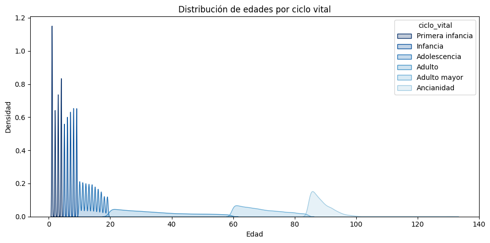
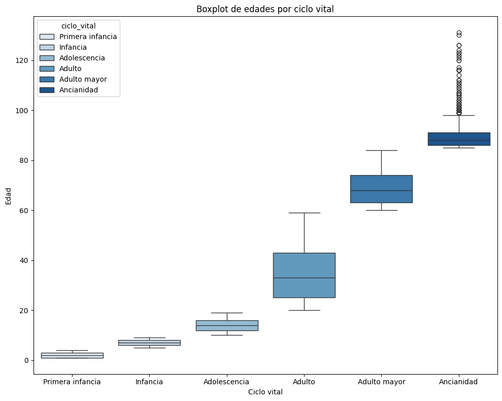
Los gráficos representan la distribución de la edad, discriminada por grupos etarios, donde se evidencia que para las primeras etapas de la vida, la distribución de la edad de los pacientes es homogénea. La etapa adulta es la de mayor variabilidad, con un ligero sesgo positivo, lo que indica una mayor proporción de casos hacia los adultos mas jóvenes. Misma dinámica se aprecia para el grupo Adulto mayor y Ancianidad, en este último se presentan los casos de pacientes en edades atípicas.
Variables de evento#
print("DESCRIPCIÓN DE VARIABLES DE EVENTO")
describir_categorica(df['evento'])
describir_categorica(df['tipo_caso'])
describir_categorica(df['hospitalizacion'])
describir_categorica(df['desenlace'])
DESCRIPCIÓN DE VARIABLES DE EVENTO
📌 Variable: evento
Conteo Proporción Clasico Grave Prop_Clasico Prop_Grave
evento
Clasico 932778 0.9842 932778 0 1.0 0.0
Grave 15012 0.0158 0 15012 0.0 1.0
-----------------------------------
📌 Variable: tipo_caso
Conteo Proporción Clasico Grave Prop_Clasico \
tipo_caso
Probable 697800 0.7362 688277 9523 0.9864
Conf. por laboratorio 241643 0.2550 236199 5444 0.9775
Conf. por nexo 8347 0.0088 8302 45 0.9946
Prop_Grave
tipo_caso
Probable 0.0136
Conf. por laboratorio 0.0225
Conf. por nexo 0.0054
-----------------------------------
📌 Variable: hospitalizacion
Conteo Proporción Clasico Grave Prop_Clasico Prop_Grave
hospitalizacion
No 546984 0.5771 545627 1357 0.9975 0.0025
Si 400806 0.4229 387151 13655 0.9659 0.0341
-----------------------------------
📌 Variable: desenlace
Conteo Proporción Clasico Grave Prop_Clasico Prop_Grave
desenlace
Vivo 947450 0.9996 932762 14688 0.9845 0.0155
Fallecido 340 0.0004 16 324 0.0471 0.9529
-----------------------------------
El virus del dengue en su manifestación clásica tiene una representatividad del 98.4% (932,778 casos) en el país, frente al reducido conjunto del 1.6% (15,012) casos graves.
En su mayoría, los casos fueron catalogados como probables (73.6%), el restante fue confirmado por laboratorio o nexo epidemiológico. La mayor parte de los pacientes (57.7%) no requirió hospitalización, aunque de los 400,806 pacientes hospitalizados, el 34.1% fue debido al dengue grave.
La tasa de fallecidos es de solo 339, en su mayoría a causa del dengue grave.
Variables espaciales#
Casos netos#
print("DESCRIPCIÓN DE VARIABLES ESPACIALES")
describir_categorica(df["area"])
describir_categorica(df['departamento'])
DESCRIPCIÓN DE VARIABLES ESPACIALES
📌 Variable: area
Conteo Proporción Clasico Grave Prop_Clasico \
area
Cabecera municipal 779765 0.8227 767715 12050 0.9845
Rural disperso 90096 0.0951 88575 1521 0.9831
Centro Poblado 77929 0.0822 76488 1441 0.9815
Prop_Grave
area
Cabecera municipal 0.0155
Rural disperso 0.0169
Centro Poblado 0.0185
-----------------------------------
📌 Variable: departamento
Conteo Proporción \
departamento
VALLE DEL CAUCA 159217 0.1680
TOLIMA 81906 0.0864
SANTANDER 77715 0.0820
ANTIOQUIA 71052 0.0750
META 70671 0.0746
ATLÁNTICO 55069 0.0581
HUILA 48034 0.0507
NORTE DE SANTANDER 47139 0.0497
BOLÍVAR 45869 0.0484
CESAR 36207 0.0382
CUNDINAMARCA 31627 0.0334
SUCRE 30919 0.0326
CÓRDOBA 30818 0.0325
CASANARE 23437 0.0247
MAGDALENA 20644 0.0218
LA GUAJIRA 15039 0.0159
QUINDIO 14298 0.0151
PUTUMAYO 13442 0.0142
CAQUETÁ 10403 0.0110
ARAUCA 8943 0.0094
CAUCA 7419 0.0078
RISARALDA 7304 0.0077
NARIÑO 6977 0.0074
BOYACÁ 6716 0.0071
CHOCÓ 5209 0.0055
CALDAS 5161 0.0054
AMAZONAS 4870 0.0051
GUAVIARE 4676 0.0049
NO IDENTIFICADO 2489 0.0026
VICHADA 1610 0.0017
GUAINÍA 1004 0.0011
ARCHIPIÉLAGO DE SAN ANDRÉS, PROVIDENCIA Y SANTA... 954 0.0010
VAUPÉS 636 0.0007
BOGOTÁ, D.C. 316 0.0003
Clasico Grave \
departamento
VALLE DEL CAUCA 157089 2128
TOLIMA 80281 1625
SANTANDER 76862 853
ANTIOQUIA 70275 777
META 69909 762
ATLÁNTICO 53859 1210
HUILA 46788 1246
NORTE DE SANTANDER 46534 605
BOLÍVAR 44695 1174
CESAR 35448 759
CUNDINAMARCA 31276 351
SUCRE 30251 668
CÓRDOBA 30376 442
CASANARE 23190 247
MAGDALENA 20055 589
LA GUAJIRA 14686 353
QUINDIO 14196 102
PUTUMAYO 13341 101
CAQUETÁ 10257 146
ARAUCA 8763 180
CAUCA 7293 126
RISARALDA 7210 94
NARIÑO 6883 94
BOYACÁ 6651 65
CHOCÓ 5148 61
CALDAS 5084 77
AMAZONAS 4848 22
GUAVIARE 4647 29
NO IDENTIFICADO 2431 58
VICHADA 1588 22
GUAINÍA 987 17
ARCHIPIÉLAGO DE SAN ANDRÉS, PROVIDENCIA Y SANTA... 944 10
VAUPÉS 631 5
BOGOTÁ, D.C. 302 14
Prop_Clasico Prop_Grave
departamento
VALLE DEL CAUCA 0.9866 0.0134
TOLIMA 0.9802 0.0198
SANTANDER 0.9890 0.0110
ANTIOQUIA 0.9891 0.0109
META 0.9892 0.0108
ATLÁNTICO 0.9780 0.0220
HUILA 0.9741 0.0259
NORTE DE SANTANDER 0.9872 0.0128
BOLÍVAR 0.9744 0.0256
CESAR 0.9790 0.0210
CUNDINAMARCA 0.9889 0.0111
SUCRE 0.9784 0.0216
CÓRDOBA 0.9857 0.0143
CASANARE 0.9895 0.0105
MAGDALENA 0.9715 0.0285
LA GUAJIRA 0.9765 0.0235
QUINDIO 0.9929 0.0071
PUTUMAYO 0.9925 0.0075
CAQUETÁ 0.9860 0.0140
ARAUCA 0.9799 0.0201
CAUCA 0.9830 0.0170
RISARALDA 0.9871 0.0129
NARIÑO 0.9865 0.0135
BOYACÁ 0.9903 0.0097
CHOCÓ 0.9883 0.0117
CALDAS 0.9851 0.0149
AMAZONAS 0.9955 0.0045
GUAVIARE 0.9938 0.0062
NO IDENTIFICADO 0.9767 0.0233
VICHADA 0.9863 0.0137
GUAINÍA 0.9831 0.0169
ARCHIPIÉLAGO DE SAN ANDRÉS, PROVIDENCIA Y SANTA... 0.9895 0.0105
VAUPÉS 0.9921 0.0079
BOGOTÁ, D.C. 0.9557 0.0443
-----------------------------------
Los casos de dengue se registraron en su mayoría en una cabecera municipal (82.3%), siendo el 9.5% en un centro poblado y el 8.2% en zona rural dispersa del territorio nacional.
La dinámica por departamentos es variada, en datos netos, los departamentos de Valle del Cauca y Tolima registran la mayor cantidad de casos de dengue clásico y grave. Luego, los departamentos de Santander, Antioquia, Meta y Atlántico, terminan de constituir el bloque de departamentos con más de 50,000 casos. Cabe destacar que Valle del Cauca, Atlántico, Huila y Bolívar registran más de 1,000 casos por dengue clásico.
Con menor representatividad, sin superar los 1,000 casos, se encuentran los departamentos de Guainía, Archipielago de San Andrés, Vaupés y la capital Bogotá.
# [Tabla] Casos por departamento
tabla_mun = df.groupby(["departamento", "año", "evento"]).size().reset_index(name="casos")
# [Gráfico] Tabla casos por departamento
totales_mun = tabla_mun.groupby("departamento")["casos"].sum()
departamentos_filtrados = totales_mun[totales_mun > 50000].index
tabla_filtrada = tabla_mun[tabla_mun["departamento"].isin(departamentos_filtrados)]
eventos = ["Clasico", "Grave"]
for evento in eventos:
tabla_evento = tabla_filtrada[tabla_filtrada["evento"] == evento]
# Crear tabla pivote
pivot = tabla_evento.pivot_table(
index="departamento",
columns="año",
values="casos",
fill_value=0
).astype(int)
# Graficar
plt.figure(figsize=(12,8))
sns.heatmap(pivot, cmap="Blues", linewidths=0.5, annot=True, fmt="d")
plt.title(f"Casos de Dengue {evento}")
plt.xlabel("Año")
plt.ylabel("departamento")
plt.show()
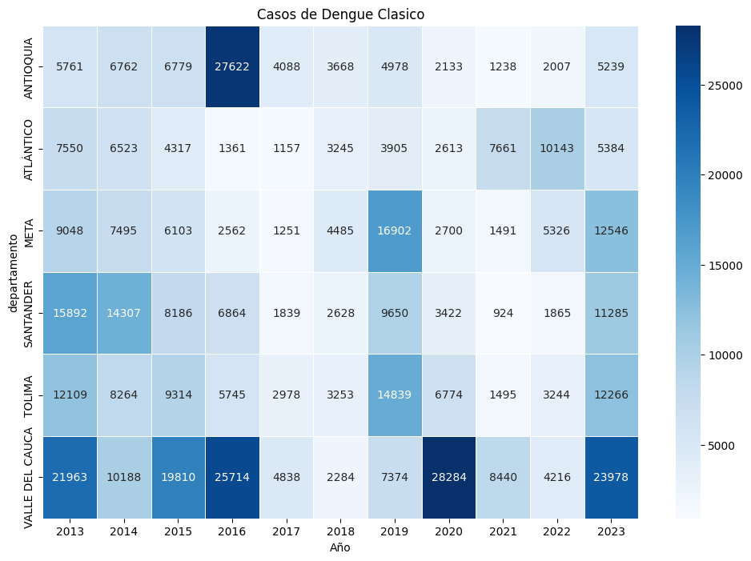
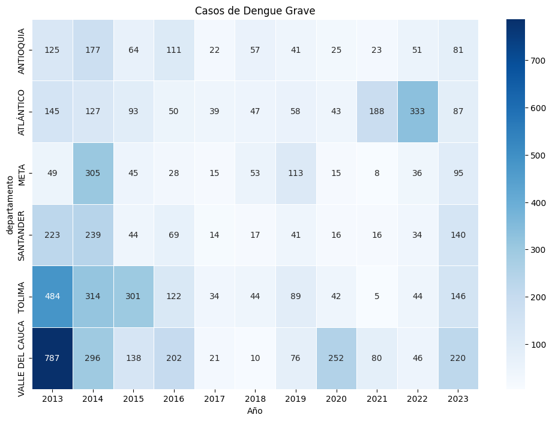
# [Gráfico] Mapa casos por departamento según evento
eventos = ["Clasico", "Grave"]
for evento in eventos:
anios = sorted(df["año"].unique())
n = len(anios) + 1 # años + total
# Calcular número de filas y columnas dinámicamente
columnas = 4
filas = (n + columnas - 1) // columnas
fig, axes = plt.subplots(filas, columnas, figsize=(5*columnas, 6*filas))
axes = axes.flatten()
# Mapas por año
for i, anio in enumerate(anios):
casos_anio = (
df[(df["año"] == anio) & (df["evento"] == evento)]
.groupby("departamento")
.size()
.reset_index(name="CASOS")
)
gdf_plot = gdf.merge(casos_anio, on="departamento", how="left").fillna(0)
gdf_plot.plot(column="CASOS", cmap="Blues", linewidth=0.8, edgecolor="0.8",
legend=True, ax=axes[i])
axes[i].set_title(f"Dengue {evento} {anio}")
axes[i].axis("off")
# Mapa total por evento
casos_total = (
df[df["evento"] == evento]
.groupby("departamento")
.size()
.reset_index(name="CASOS")
)
gdf_total = gdf.merge(casos_total, on="departamento", how="left").fillna(0)
gdf_total.plot(column="CASOS", cmap="Blues", linewidth=0.8, edgecolor="0.8",
legend=True, ax=axes[-1])
axes[-1].set_title(f"Dengue {evento} Total")
axes[-1].axis("off")
# Ocultar subplots vacíos (si sobran)
for j in range(len(anios) + 1, len(axes)):
axes[j].axis("off")
plt.tight_layout()
plt.show()
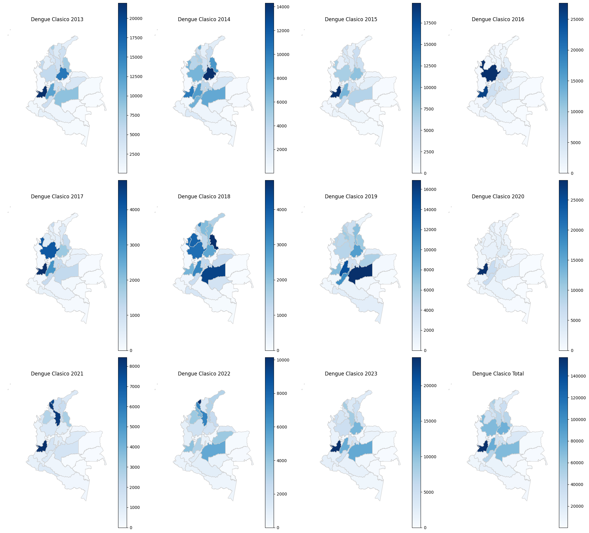
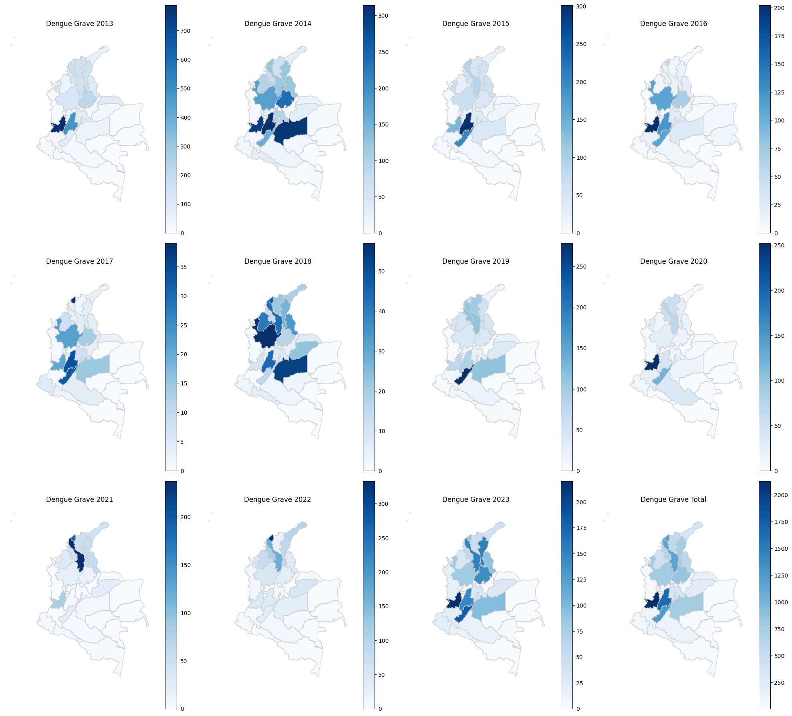
Casos por densidad poblacional#
# [Tabla] Casos por departamento
tabla_mun = df.groupby(["departamento", "año", "evento"]).size().reset_index(name="casos")
# Ajustar nombres de columna para unir
poblacion = poblacion.rename(columns={'DEPARTAMENTO':'departamento', 'TOTAL':'total_pob'})
# Convertir columnas de año en una columna 'año'
poblacion_long = poblacion.melt(
id_vars=['departamento', 'total_pob'], # mantener departamento y total
value_vars=['2013.0', '2014.0', '2015.0', '2016.0', '2017.0','2018.0',
'2019.0','2020.0','2021.0','2022.0','2023.0'],
var_name='año',
value_name='poblacion'
)
# Asegurarse de que 'año' sea numérico
poblacion_long['año'] = poblacion_long['año'].astype(float).astype(int)
# Unir casos con población del mismo año
tabla_mun = tabla_mun.merge(poblacion_long, on=['departamento','año'], how='left')
# Densidad por año y departamento
tabla_mun['densidad'] = tabla_mun['casos'] / tabla_mun['poblacion']
# Si quieres por cada 1000 habitantes
tabla_mun['densidad'] = (tabla_mun['casos'] / tabla_mun['poblacion']) * 10000
tabla_mun = tabla_mun.sort_values(by='densidad', ascending=False)
# Densidad global por departamento (todos los años)
densidad_global = tabla_mun.groupby("departamento").agg(
casos_totales=('casos', 'sum'),
poblacion_total=('total_pob', 'first') # la misma población total por municipio
).reset_index()
densidad_global['densidad_global'] = (densidad_global['casos_totales'] / densidad_global['poblacion_total']) * 100000
# Ordenar de mayor a menor
densidad_global = densidad_global.sort_values(by='densidad_global', ascending=False)
densidad_global.head(10)
| departamento | casos_totales | poblacion_total | densidad_global | |
|---|---|---|---|---|
| 21 | META | 70671 | 11479079.0 | 615.650437 |
| 0 | AMAZONAS | 4870 | 842716.0 | 577.893383 |
| 30 | TOLIMA | 81906 | 14734749.0 | 555.869666 |
| 17 | GUAVIARE | 4676 | 889614.0 | 525.621224 |
| 10 | CASANARE | 23437 | 4642400.0 | 504.846631 |
| 18 | HUILA | 48034 | 12159495.0 | 395.032853 |
| 25 | PUTUMAYO | 13442 | 3828699.0 | 351.085316 |
| 31 | VALLE DEL CAUCA | 159217 | 49575463.0 | 321.160894 |
| 28 | SANTANDER | 77715 | 24224224.0 | 320.815230 |
| 2 | ARAUCA | 8943 | 2828826.0 | 316.138214 |
top10 = densidad_global.head(10)
plt.figure(figsize=(10, 6))
sns.barplot(data=top10, x='densidad_global', y='departamento', hue='departamento', palette='Purples_r')
plt.title("Densidad global por departamento (casos por 100,000 hab)", fontsize=14)
plt.xlabel("Densidad (por 100,000 habitantes)")
plt.ylabel("Departamento")
plt.tight_layout()
plt.show()
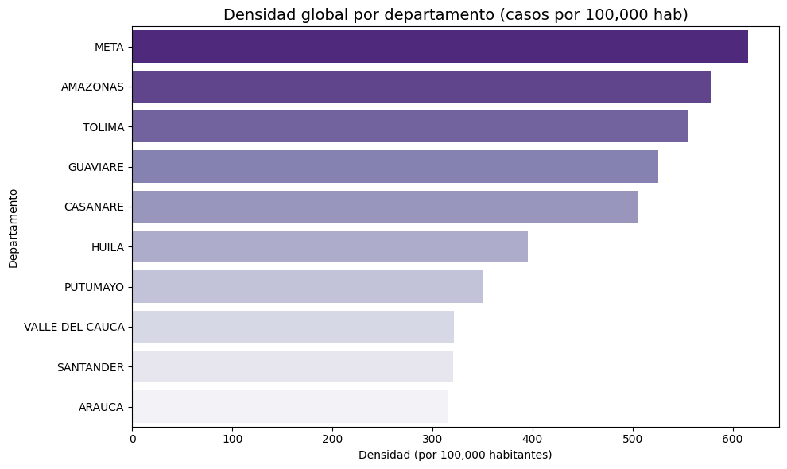
densidad_global['densidad_global'].describe()
count 32.000000
mean 236.205205
std 173.361032
min 0.382692
25% 100.286473
50% 192.161615
75% 320.901646
max 615.650437
Name: densidad_global, dtype: float64
sns.boxplot(data=densidad_global, x='densidad_global', color='Purple')
<Axes: xlabel='densidad_global'>
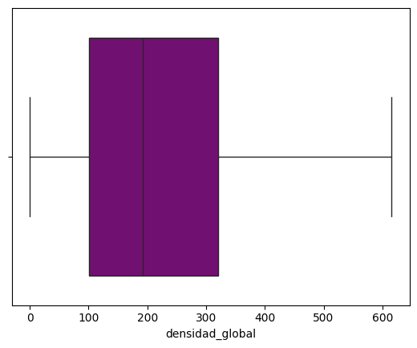
La densidad poblacional de casos de dengue por departamento variable. En promedio, cada departamento reporta 236.20 casos por cada 100,000 habitantes, con una desviación estándar alta de 173.3 casos, indicando variaciones en la concentración de casos por departamento. La mitad de los departamentos reporta a lo más 192.1 casos, evidenciando que la densidad de casos se concentra en valores bajos, con una distribución sesgada a la derecha.
El departamento de Meta es el de mayor densidad de casos de dengue reportando 615.65 casos por cada 100,000 habitantes. Sumado a ello, encontramos el bloque de departamentos con una densidad de más de 500 casos conformado por Amazonas, Tolima, Guaviare y Casanare.
# [Gráfico] Mapa casos por departamento según evento
eventos = ["Clasico", "Grave"]
for evento in eventos:
anios = sorted(df["año"].unique())
n = len(anios) + 1 # años + total
# Calcular número de filas y columnas dinámicamente
columnas = 4
filas = (n + columnas - 1) // columnas
fig, axes = plt.subplots(filas, columnas, figsize=(5*columnas, 6*filas))
axes = axes.flatten()
# Mapas por año
for i, anio in enumerate(anios):
casos_anio = (
tabla_mun[(tabla_mun["año"] == anio) & (tabla_mun["evento"] == evento)]
.groupby("departamento")["densidad"].sum() # sumar densidad por departamento
.reset_index()
)
gdf_plot = gdf.merge(casos_anio, on="departamento", how="left").fillna(0)
gdf_plot.plot(column="densidad", cmap="Purples", linewidth=0.8, edgecolor="0.8",
legend=True, ax=axes[i])
axes[i].set_title(f"Dengue {evento} {anio}")
axes[i].axis("off")
gdf_total = gdf.merge(densidad_global[['departamento','densidad_global']], on="departamento", how="left").fillna(0)
gdf_total.plot(column="densidad_global", cmap="Purples", linewidth=0.8, edgecolor="0.8",
legend=True, ax=axes[-1])
axes[-1].set_title(f"Dengue {evento} Densidad Global")
axes[-1].axis("off")
# Ocultar subplots vacíos (si sobran)
for j in range(len(anios) + 1, len(axes)):
axes[j].axis("off")
plt.tight_layout()
plt.show()
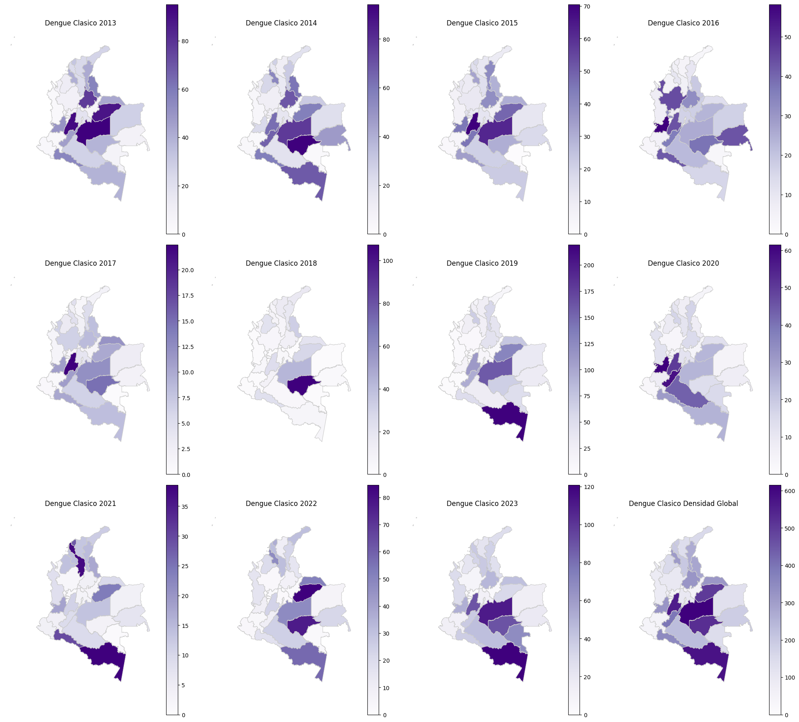
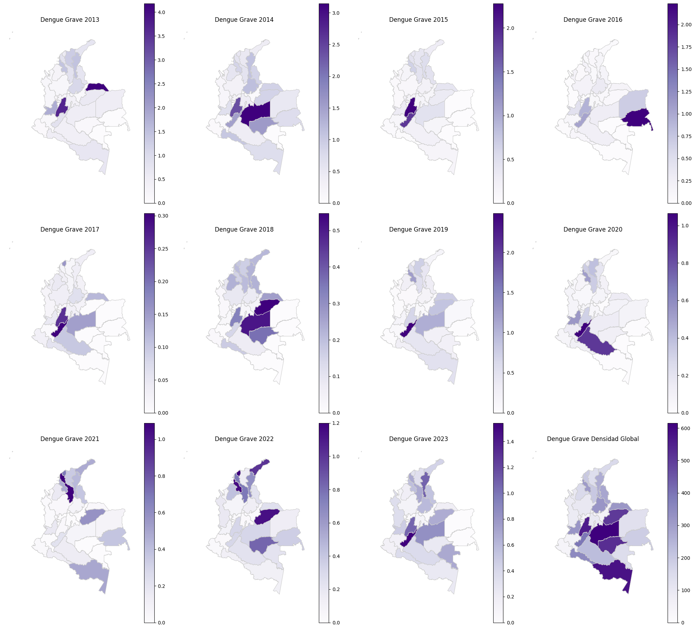
Variables temporales#
describir_categorica(df["año"])
📌 Variable: año
Conteo Proporción Clasico Grave Prop_Clasico Prop_Grave
año
2023 128101 0.1352 126381 1720 0.9866 0.0134
2013 125550 0.1325 122441 3109 0.9752 0.0248
2019 124942 0.1318 123594 1348 0.9892 0.0108
2014 107930 0.1139 105311 2619 0.9757 0.0243
2016 100970 0.1065 100071 899 0.9911 0.0089
2015 96401 0.1017 94980 1421 0.9853 0.0147
2020 77241 0.0815 76379 862 0.9888 0.0112
2022 67003 0.0707 65664 1339 0.9800 0.0200
2021 50244 0.0530 49304 940 0.9813 0.0187
2018 44156 0.0466 43637 519 0.9882 0.0118
2017 25252 0.0266 25016 236 0.9907 0.0093
-----------------------------------
# [Gráfico] Distribución por años
conteo_por_año = df['año'].value_counts(sort=False).sort_index()
# Crear gráfico
plt.figure(figsize=(10, 5))
sns.barplot(x=conteo_por_año.index.astype(str), y=conteo_por_año.values, color='#2E4265')
plt.title('Distribución de años', fontsize=14, fontweight='bold', pad=15)
plt.xlabel("Año")
plt.ylabel("Número de casos")
plt.xticks(rotation=0)
plt.ylim(0, max(conteo_por_año.values) * 1.1)
plt.tight_layout()
plt.show()
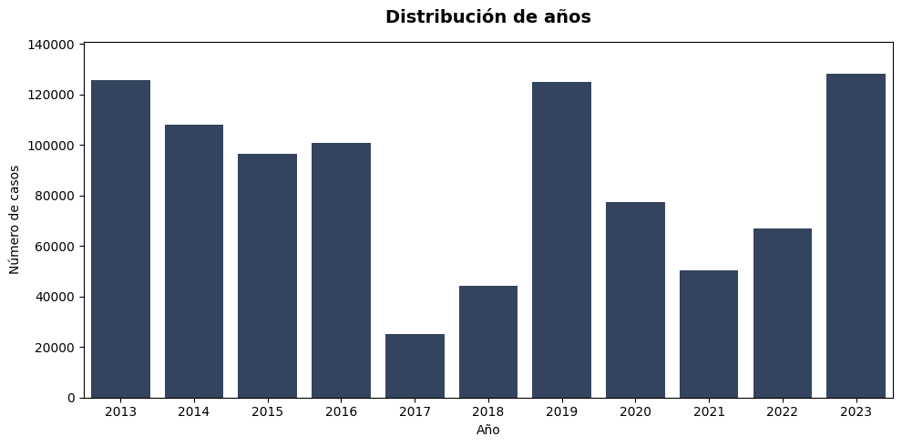
La variabilidad de los casos en el tiempo, muestra una tendencia cambiante al pasar de los años, en los primeros 3 años de registro, existe una tendencia a la baja, con una caída abrupta hacia el 2017, que luego se recupera con un pico en el 2019, volviendo a repetirse el patrón del 2020 al 2023, donde se tuvo la menor cantidad de registros en el 2021.
La mayor cantidad de casos de dengue se reportan en los años 2013, 2019 y 2023, representando cada uno un más del 13% del total de registros. El 2013 fue el año con mayor cantidad de casos por dengue grave reportado, con más de 3,100 eventos, seguido del 2014 con 2,619 casos.
# [Gráfico] Casos por semana
casos_semana = df.groupby(["año", "semana"]).size().reset_index(name="casos")
casos_semana = casos_semana.sort_values(["año", "semana"]).reset_index(drop=True)
casos_semana["index"] = range(len(casos_semana))
# Graficar
plt.figure(figsize=(14, 6))
plt.plot(casos_semana["index"], casos_semana["casos"], linewidth=1)
años_unicos = casos_semana["año"].unique()
ticks = [casos_semana[casos_semana["año"] == año].index[0] for año in años_unicos]
plt.xticks(ticks, años_unicos, fontsize=10)
plt.title("Evolución de Casos por Semana (2017-2023)", fontsize=14)
plt.xlabel("Año")
plt.ylabel("Número de Casos")
plt.grid(True, linestyle="--", alpha=0.6)
plt.tight_layout()
plt.show()
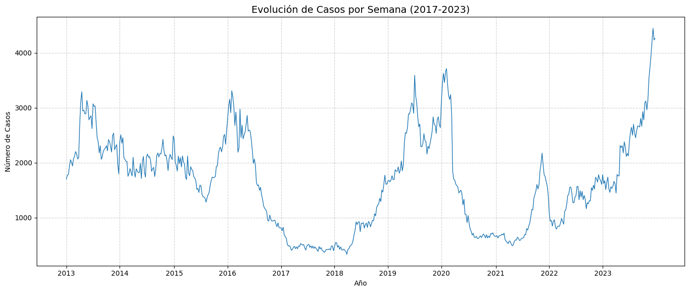
eventos = df["evento"].unique()
for ev in eventos:
# Filtrar por evento
df_evento = df[df["evento"] == ev]
# Agrupar por semana y año
casos_evento = df_evento.groupby(["año", "semana"]).size().reset_index(name="casos")
casos_evento = casos_evento.sort_values(["año", "semana"]).reset_index(drop=True)
casos_evento["index"] = range(len(casos_evento))
# Graficar
plt.figure(figsize=(14, 6))
plt.plot(casos_evento["index"], casos_evento["casos"], linewidth=1.5, label=f"Evento: {ev}")
años_unicos = casos_evento["año"].unique()
ticks = [casos_evento[casos_evento["año"] == año].index[0] for año in años_unicos]
plt.xticks(ticks, años_unicos, fontsize=10)
plt.title(f"Evolución de Casos por Semana ({ev})", fontsize=14)
plt.xlabel("Año")
plt.ylabel("Número de Casos")
plt.grid(True, linestyle="--", alpha=0.6)
plt.tight_layout()
plt.legend()
plt.show()
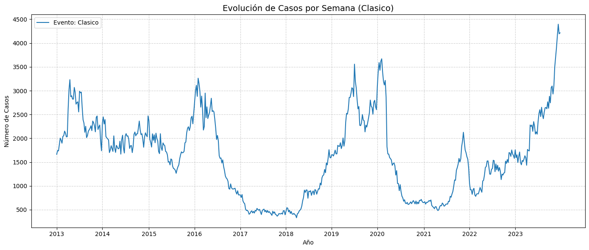
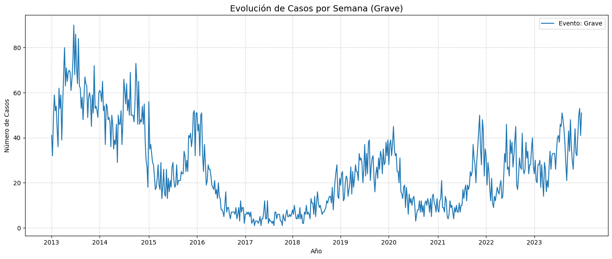
week = tabla_descriptiva(df_edad, variable="semana", grupo="año")
week
| año | n | media | mediana | sd | q25 | q75 | minimo | maximo | |
|---|---|---|---|---|---|---|---|---|---|
| 0 | 2013 | 124071 | 26.62 | 26.0 | 14.17 | 15.0 | 39.0 | 1 | 52 |
| 1 | 2014 | 106615 | 27.19 | 28.0 | 15.66 | 13.0 | 41.0 | 1 | 53 |
| 2 | 2015 | 95110 | 26.86 | 26.0 | 15.99 | 12.0 | 42.0 | 1 | 52 |
| 3 | 2016 | 100244 | 20.47 | 19.0 | 13.61 | 9.0 | 30.0 | 1 | 52 |
| 4 | 2017 | 24955 | 24.50 | 24.0 | 15.46 | 10.0 | 38.0 | 1 | 52 |
| 5 | 2018 | 43678 | 32.67 | 35.0 | 14.46 | 22.0 | 45.0 | 1 | 52 |
| 6 | 2019 | 123909 | 28.30 | 28.0 | 14.27 | 18.0 | 41.0 | 1 | 52 |
| 7 | 2020 | 76640 | 17.49 | 12.0 | 14.42 | 6.0 | 26.0 | 1 | 53 |
| 8 | 2021 | 49764 | 32.79 | 38.0 | 15.07 | 21.0 | 45.0 | 1 | 52 |
| 9 | 2022 | 66465 | 29.33 | 30.0 | 14.60 | 18.0 | 42.0 | 1 | 52 |
| 10 | 2023 | 127283 | 31.02 | 33.0 | 14.88 | 19.0 | 44.0 | 1 | 52 |
# --- Contar casos por semana y año ---
conteo_semanal = df.groupby(['año', 'semana']).size().reset_index(name='casos')
def graficar_casos_semanales_dividido(df_conteo, nombre_grafico="Casos semanales por año"):
sns.set_style("whitegrid")
años = sorted(df_conteo['año'].unique())
mitad = len(años) // 2 # punto de división
grupos = [años[:mitad], años[mitad:]] # dos mitades de años
palette = ["#08306B", "#08519C", "#2171B5", "#4292C6", "#6BAED6", "#9ECAE1"]
for idx, grupo_años in enumerate(grupos, start=1):
plt.figure(figsize=(12, 6))
# Seleccionar solo los colores necesarios
colores = palette[:len(grupo_años)]
for i, año in enumerate(grupo_años):
datos_año = df_conteo[df_conteo['año'] == año]
plt.plot(
datos_año['semana'], datos_año['casos'],
label=str(año),
color=colores[i],
linewidth=2
)
plt.title(f"{nombre_grafico} (Grupo {idx})", fontsize=16, fontweight='bold')
plt.xlabel("Semana del año")
plt.ylabel("Número de casos")
plt.xticks(range(1, 54))
plt.legend(title="Año")
plt.tight_layout()
plt.show()
# --- Ejecutar ---
graficar_casos_semanales_dividido(conteo_semanal)
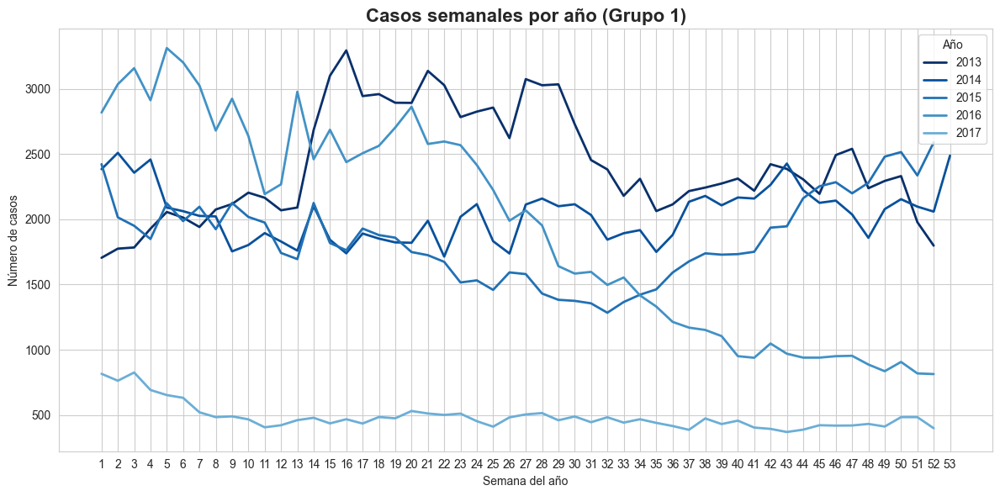
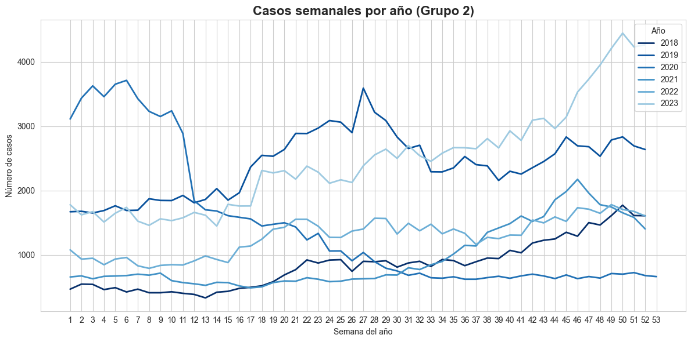
# Agrupar y pivotear
conteo_semanal_semanal = df.groupby(['año', 'semana']).size().reset_index(name='casos')
tabla_pivot = conteo_semanal.pivot(index='año', columns='semana', values='casos').fillna(0).astype(int)
# Crear lista para almacenar resultados
resumen_semanas = []
for año in tabla_pivot.index:
fila = tabla_pivot.loc[año]
semana_max = fila.idxmax()
casos_max = fila.max()
resumen_semanas.append({
"año": año,
"semana_más_casos": semana_max,
"casos_máximos": casos_max,
})
tabla_resumen = pd.DataFrame(resumen_semanas)
tabla_resumen
| año | semana_más_casos | casos_máximos | |
|---|---|---|---|
| 0 | 2013 | 16 | 3294 |
| 1 | 2014 | 2 | 2509 |
| 2 | 2015 | 52 | 2589 |
| 3 | 2016 | 5 | 3312 |
| 4 | 2017 | 3 | 826 |
| 5 | 2018 | 50 | 1774 |
| 6 | 2019 | 27 | 3594 |
| 7 | 2020 | 6 | 3715 |
| 8 | 2021 | 46 | 2176 |
| 9 | 2022 | 49 | 1783 |
| 10 | 2023 | 50 | 4449 |
Al evaluar los registros por semana epidemiológica, se evidencia un comportamiento variado a lo largo de los años. Del 2013 a mitad de 2016, se reportan entre 1500 a 3200 casos por semana, pasando a menos de 500 en el 2017. Los picos más altos de registros se encuentran en la mitad del 2019 e inicios del 2020, con más de 3,500 casos, el más alto, se da a finales del 2023 superando los 4,000 casos en una semana.
De manera general, la mitad de los casos se reportaron entre la semana 14 y la semana 39. El año más variable fue el 2019, frente al 2017 el menos variable.
2. Análisis estadístico#
demograficas = [
"sexo", # M/F
"edad_años", # Edad numérica
"ciclo_vital", # Etapa de vida
"grupo_etnico", # Grupo étnico declarado
"regimen_salud" # Régimen (contributivo, subsidiado, etc.)
]
# Variables del evento epidemiológico
evento = [
"evento", # Clásico, grave
"tipo_caso", # Confirmado, probable, descartado
"hospitalizacion", # Sí/No
"desenlace" # Recuperado, fallecido, etc.
]
# Variables de temporalidad
temporalidad = [
"año", # Año del evento
"semana", # Semana epidemiológica
"periodo", # Periodo (cada 4 semanas)
"fecha_inicio_sintomas", # Inicio de síntomas
"fecha_consulta", # Fecha de consulta
"fecha_hospitalizacion", # Fecha de hospitalización
"fecha_notificacion", # Fecha de notificación
"fecha_nacimiento" # Fecha de nacimiento
]
# Variables espaciales
espacial = [
"departamento", # Municipio de ocurrencia
"area", # Urbana o rural
]
Pruebas de independencia de variables categóricas#
# [Test] Prueba de Chi-Cuadrado
def matriz_pvalores(df, variables, alpha=0.05):
matriz = pd.DataFrame(index=variables, columns=variables)
for var1 in variables:
for var2 in variables:
if var1 == var2:
matriz.loc[var1, var2] = "-"
else:
tabla = pd.crosstab(df[var1], df[var2])
if tabla.shape[0] > 1 and tabla.shape[1] > 1:
chi2, p, dof, exp = chi2_contingency(tabla)
matriz.loc[var1, var2] = round(p, 4)
else:
matriz.loc[var1, var2] = None
return matriz
# [Test] Prueba de Chi-cuadrado por categoría
def chi_por_categoria(df, variable_referencia, variables_comparar, alpha=0.05):
categorias = df[variable_referencia].dropna().unique()
resultados = []
for categoria in categorias:
fila = {"Categoría": categoria}
for var in variables_comparar:
if var == variable_referencia:
fila[var] = "-"
continue
# Grupo A = categoría específica vs resto
df_temp = df.copy()
df_temp["grupo_vs_resto"] = df_temp[variable_referencia].apply(
lambda x: categoria if x == categoria else f"No {categoria}"
)
tabla = pd.crosstab(df_temp["grupo_vs_resto"], df_temp[var])
_, p, _, _ = chi2_contingency(tabla)
test = "Chi²"
simb = "★" if p <= alpha else ""
fila[var] = f"{round(p,4)} {simb}"
resultados.append(fila)
return pd.DataFrame(resultados)
Variables demográficas#
demograficas_c = ["sexo", "ciclo_vital","grupo_etnico","regimen_salud"]
matriz_demo = matriz_pvalores(df[demograficas_c], demograficas_c)
matriz_demo
| sexo | ciclo_vital | grupo_etnico | regimen_salud | |
|---|---|---|---|---|
| sexo | - | 0.0 | 0.0 | 0.0 |
| ciclo_vital | 0.0 | - | 0.0 | 0.0 |
| grupo_etnico | 0.0 | 0.0 | - | 0.0 |
| regimen_salud | 0.0 | 0.0 | 0.0 | - |
De acuerdo a la prueba de Chi-cuadrado, todas las variables demográficas son dependientes entre sí, indicando relación entre los grupos.
tabla_sexo = chi_por_categoria(df, "sexo", demograficas_c)
tabla_sexo
| Categoría | sexo | ciclo_vital | grupo_etnico | regimen_salud | |
|---|---|---|---|---|---|
| 0 | Masculino | - | 0.0 ★ | 0.0 ★ | 0.0 ★ |
| 1 | Femenino | - | 0.0 ★ | 0.0 ★ | 0.0 ★ |
tabla_ciclo = chi_por_categoria(df, "ciclo_vital", demograficas_c)
tabla_ciclo
| Categoría | sexo | ciclo_vital | grupo_etnico | regimen_salud | |
|---|---|---|---|---|---|
| 0 | Adulto mayor | 0.0 ★ | - | 0.0 ★ | 0.0 ★ |
| 1 | Adulto | 0.001 ★ | - | 0.0 ★ | 0.0 ★ |
| 2 | Adolescencia | 0.0 ★ | - | 0.0005 ★ | 0.0 ★ |
| 3 | Ancianidad | 0.9921 | - | 0.4728 | 0.0 ★ |
| 4 | Infancia | 0.0 ★ | - | 0.0 ★ | 0.0 ★ |
| 5 | Menor de 1 año | 0.4896 | - | 0.0297 ★ | 0.0 ★ |
| 6 | Primera infancia | 0.0 ★ | - | 0.0 ★ | 0.0 ★ |
| 7 | Desconocido | 0.9146 | - | 0.966 | 0.9829 |
tabla_salud = chi_por_categoria(df, "regimen_salud", demograficas_c)
tabla_salud
| Categoría | sexo | ciclo_vital | grupo_etnico | regimen_salud | |
|---|---|---|---|---|---|
| 0 | Subsidiado | 0.0 ★ | 0.0 ★ | 0.0 ★ | - |
| 1 | Contributivo | 0.0 ★ | 0.0 ★ | 0.0 ★ | - |
| 2 | Excepción | 0.0 ★ | 0.0 ★ | 0.0 ★ | - |
| 3 | Especial | 0.0 ★ | 0.0 ★ | 0.0 ★ | - |
| 4 | No asegurado | 0.0 ★ | 0.0 ★ | 0.0 ★ | - |
| 5 | Indeterminado | 0.2143 | 0.0 ★ | 0.0 ★ | - |
Cada variable demográfica es dependiente del sexo del paciente. Solo los menores a un año y los ancianos, y los pacientes de regimen de salud indeterminado no dependen de ello.
En el regimen de salud, esta estrechamente dependiente de la edad de los pacientes, asi como la pertenencia a un grupo étnico.
categoricas = ["sexo", "ciclo_vital","grupo_etnico","regimen_salud",
"tipo_de_caso", "hospitalizacion","desenlace"]
tabla_evento = chi_por_categoria(df, "evento", demograficas_c)
tabla_evento
| Categoría | sexo | ciclo_vital | grupo_etnico | regimen_salud | |
|---|---|---|---|---|---|
| 0 | Clasico | 0.4796 | 0.0 ★ | 0.0 ★ | 0.0 ★ |
| 1 | Grave | 0.4796 | 0.0 ★ | 0.0 ★ | 0.0 ★ |
La prueba de Chi-Cuadrado de independencia entre el evento de dengue y las variables demográficas muestra que ambos casos de evento están significativamente relacionados a todas las variables demográficas.
matriz_eve= matriz_pvalores(df[evento], evento)
matriz_eve
| evento | tipo_caso | hospitalizacion | desenlace | |
|---|---|---|---|---|
| evento | - | 0.0 | 0.0 | 0.0 |
| tipo_caso | 0.0 | - | 0.0 | 0.2171 |
| hospitalizacion | 0.0 | 0.0 | - | 0.0 |
| desenlace | 0.0 | 0.2171 | 0.0 | - |
Con respecto a las variables relacionadas con el evento epidemiológico, solo el tipo de caso es estadísticamente independiente al desenlace del paciente. Del resto, el tipo de caso, la hospitalización y el desenlace del paciente son significativamente dependientes del evento de dengue.
Análisis bivariado: Variables de evento según demografía#
Hospitalización de pacientes#
plt.figure(figsize=(10,5))
sns.countplot(data=df, y="ciclo_vital", hue="hospitalizacion", palette=[ 'blue','dodgerblue'] )
plt.title("Hospitalización según grupo de edad")
plt.ylabel("Grupo de edad")
plt.xlabel("Número de casos")
plt.legend(title="Hospitalizado")
plt.show()
plt.figure(figsize=(10,5))
sns.countplot(data=df, x="sexo", hue="hospitalizacion", palette=[ 'blue','dodgerblue'] )
plt.title("Hospitalización según sexo")
plt.xlabel("Sexo")
plt.ylabel("Número de casos")
plt.legend(title="Hospitalizado")
plt.show()
plt.figure(figsize=(10,5))
sns.countplot(data=df, y="regimen_salud", hue="hospitalizacion", palette=[ 'blue','dodgerblue'] )
plt.title("Hospitalización según regimen de salud")
plt.ylabel("Regimen de salud")
plt.xlabel("Número de casos")
plt.legend(title="Hospitalizado")
plt.show()
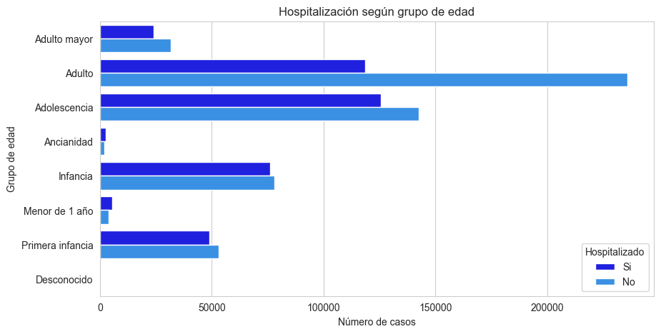
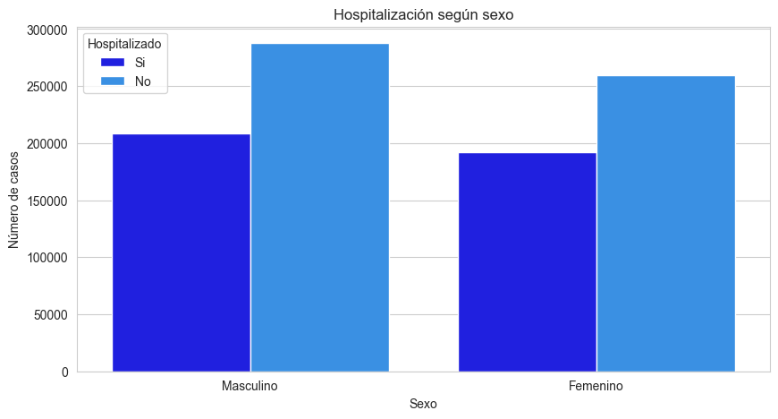
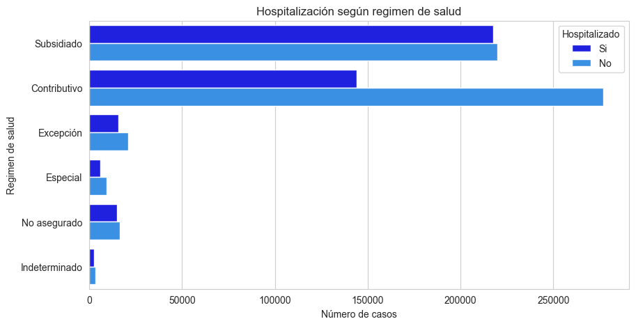
La hospitalización es más frecuente en adultos y adolescentes, aunque el grupo adulto concentra la mayor cantidad de casos totales. Los extremos etarios muestran menor frecuencia, lo que sugiere que la edad media es la más vulnerable en términos de atención hospitalaria.
Tanto en hombres como en mujeres predominan los casos no hospitalizados, aunque los hombres presentan una ligera mayor proporción de hospitalización. Finalmente, el régimen subsidiado tiene la cantidad más alta de hospitalizaciones, seguido del contributivo, que adicionalmente tambien tiene la mayor cantidad de casos. Esto puede indicar desigualdades en el acceso y gravedad de los casos entre afiliados de distintos regímenes de salud.
Tipo de caso#
plt.figure(figsize=(10,5))
sns.countplot(data=df, y="ciclo_vital", hue="tipo_caso", palette=[ 'blue','dodgerblue','skyblue'] )
plt.title("Tipo de caso según grupo de edad")
plt.ylabel("Grupo de edad")
plt.xlabel("Número de casos")
plt.legend(title="Tipo de caso")
plt.show()
plt.figure(figsize=(10,5))
sns.countplot(data=df, x="sexo", hue="tipo_caso", palette=[ 'blue','dodgerblue','skyblue'] )
plt.title("Tipo de caso según sexo")
plt.xlabel("Sexo")
plt.ylabel("Número de casos")
plt.legend(title="Tipo de caso")
plt.show()
plt.figure(figsize=(10,5))
sns.countplot(data=df, y="regimen_salud", hue="tipo_caso", palette=[ 'blue','dodgerblue','skyblue'] )
plt.title("Tipo de caso según regimen de salud")
plt.ylabel("Regimen de salud")
plt.xlabel("Número de casos")
plt.legend(title="Tipo de caso")
plt.show()
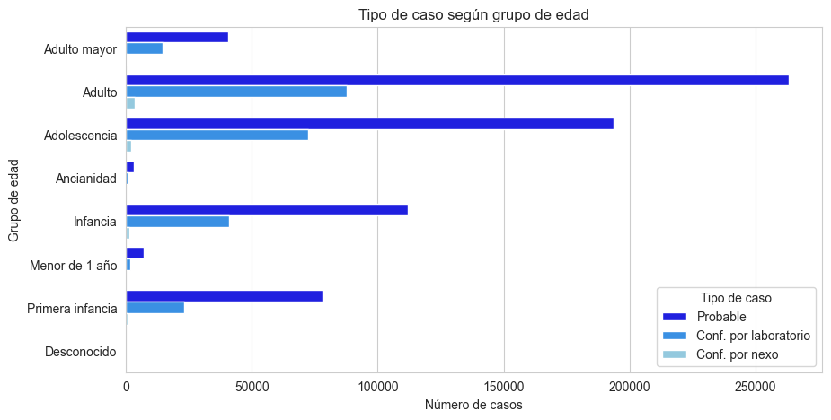
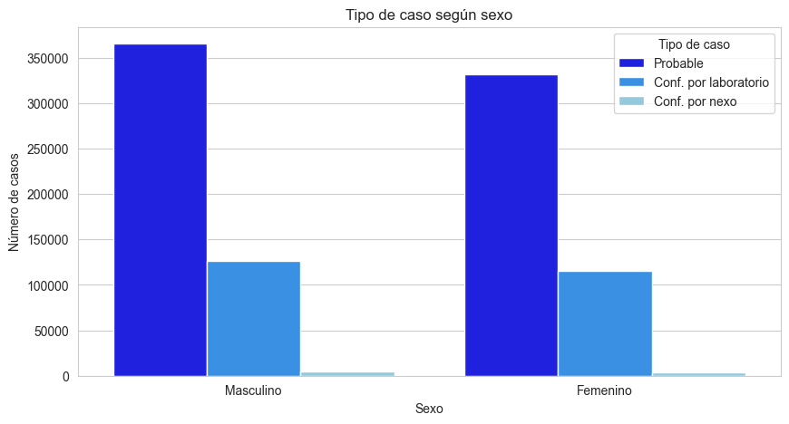
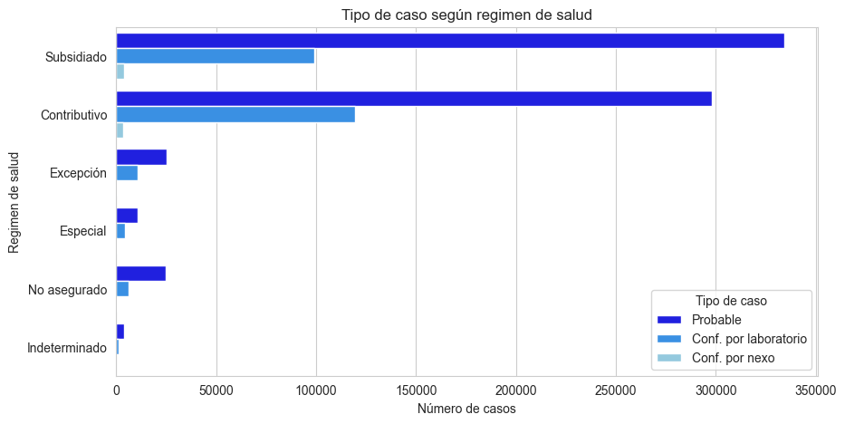
El tipo de caso presenta una mayor frecuencia en la categoría “probable” para todos los grupos etarios, especialmente en adultos y adolescentes, lo que evidencia que gran parte de los casos de dengue registrados no cuentan con confirmación de laboratorio. En cuanto al sexo, tanto hombres como mujeres muestran la misma tendencia: predominan los casos probables, seguidos por los confirmados por laboratorio, siendo muy pocos los confirmados por nexo. Por último, el régimen contributivo y el subsidiado concentran la mayor cantidad de reportes, aunque en ambos predomina el tipo probable, lo que puede reflejar limitaciones en el acceso a pruebas diagnósticas o en la confirmación formal de los casos dentro del sistema de salud.
Desenlace#
df_fallecidos = df[df["desenlace"] == "Fallecido"]
plt.figure(figsize=(10,5))
sns.countplot(data=df_fallecidos, y="ciclo_vital", color='dodgerblue')
plt.title("Fallecidos según grupo de edad")
plt.ylabel("Grupo de edad")
plt.xlabel("Número de casos")
plt.show()
plt.figure(figsize=(10,5))
sns.countplot(data=df_fallecidos, x="sexo", color='dodgerblue')
plt.title("Fallecidos según sexo")
plt.xlabel("Sexo")
plt.ylabel("Número de casos")
plt.show()
plt.figure(figsize=(10,5))
sns.countplot(data=df_fallecidos, y="regimen_salud", color='dodgerblue')
plt.title("Fallecidos según regimen de salud")
plt.ylabel("Regimen de salud")
plt.xlabel("Número de casos")
plt.show()
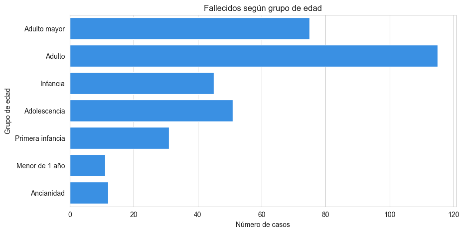
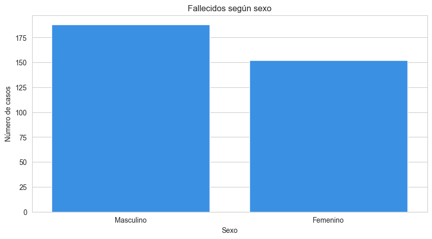
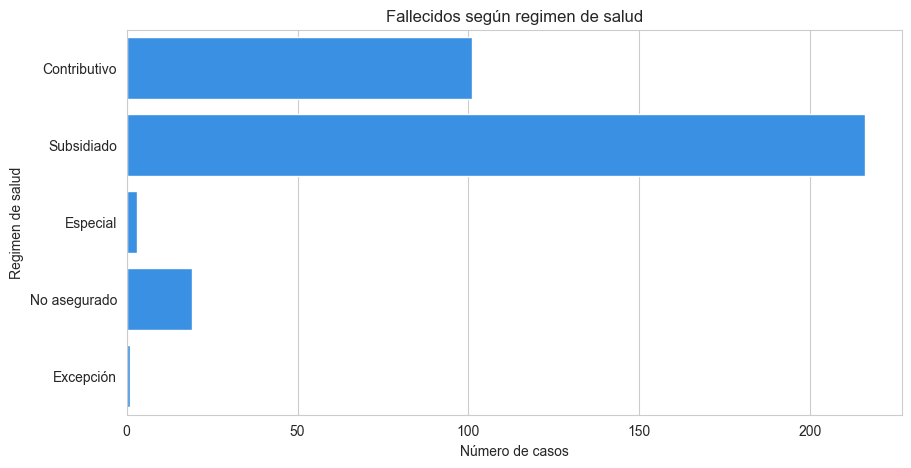
La mayor cantidad de fallecimientos se concentra en los grupos adulto y adulto mayor, lo que evidencia que el riesgo aumenta con la edad. Los menores de un año y los de la tercera edad muestran menor frecuencia, posiblemente por menor exposición o mejores cuidados médicos específicos.
Aunque no haya mucha diferencia, se observa una mayor mortalidad en hombres que en mujeres. Finalmente, el regimen subsidado presenta la mayor proporción de muertes, seguido del contributivo.
Temporalidad de casos#
# [Test] Shapiro para normalidad
stat, p = shapiro(semanas['total_casos'])
print(f"Estadístico={stat:.3f}, p-valor={p:.4f}")
Estadístico=0.961, p-valor=0.0000
Los casos de dengue por semana epidemiológica en Colombia, de acuerdo a la prueba Shapiro-Wilk, no siguen una distribución normal.
# [Test] Kruskall Wallys para correspondencia
def comparar_casos_por_año(df, num_var='casos', cat_var='año', alpha=0.05):
grupos = [df[df[cat_var]==g][num_var] for g in df[cat_var].unique()]
# Kruskal-Wallis
stat, p = kruskal(*grupos)
kruskal_res = pd.DataFrame({
'Estadístico': [stat],
'p-valor': [p],
'Significativo': ["★" if p <= alpha else ""]
})
# Post-hoc Dunn (solo si hay más de 2 grupos)
if len(df[cat_var].unique()) > 2:
posthoc = sp.posthoc_dunn(df, val_col=num_var, group_col=cat_var, p_adjust='bonferroni')
else:
posthoc = None
return {'kruskal': kruskal_res, 'posthoc': posthoc}
resultados = comparar_casos_por_año(semanas, num_var='total_casos', cat_var='año')
print("Kruskal-Wallis:")
resultados['kruskal']
Kruskal-Wallis:
| Estadístico | p-valor | Significativo | |
|---|---|---|---|
| 0 | 368.994218 | 3.690941e-73 | ★ |
print("\nDunn post-hoc (p-valores corregidos Bonferroni):")
resultados['posthoc']
Dunn post-hoc (p-valores corregidos Bonferroni):
| 2013 | 2014 | 2015 | 2016 | 2017 | 2018 | 2019 | 2020 | 2021 | 2022 | 2023 | |
|---|---|---|---|---|---|---|---|---|---|---|---|
| 2013 | 1.000000e+00 | 1.000000e+00 | 2.513774e-02 | 1.477238e-01 | 5.266495e-34 | 3.504767e-21 | 1.000000e+00 | 5.123982e-09 | 1.076316e-17 | 3.293297e-11 | 1.000000e+00 |
| 2014 | 1.000000e+00 | 1.000000e+00 | 1.000000e+00 | 1.000000e+00 | 9.753248e-24 | 3.498944e-13 | 1.000000e+00 | 6.205312e-04 | 1.996408e-10 | 1.615975e-05 | 1.000000e+00 |
| 2015 | 2.513774e-02 | 1.000000e+00 | 1.000000e+00 | 1.000000e+00 | 1.552066e-17 | 1.164494e-08 | 5.030711e-02 | 1.712690e-01 | 1.963353e-06 | 1.204544e-02 | 2.371896e-01 |
| 2016 | 1.477238e-01 | 1.000000e+00 | 1.000000e+00 | 1.000000e+00 | 1.417174e-19 | 3.901544e-10 | 2.704809e-01 | 2.950992e-02 | 9.949858e-08 | 1.473316e-03 | 1.000000e+00 |
| 2017 | 5.266495e-34 | 9.753248e-24 | 1.552066e-17 | 1.417174e-19 | 1.000000e+00 | 4.795651e-01 | 5.569410e-33 | 7.401822e-08 | 2.921311e-02 | 7.127116e-06 | 1.505902e-30 |
| 2018 | 3.504767e-21 | 3.498944e-13 | 1.164494e-08 | 3.901544e-10 | 4.795651e-01 | 1.000000e+00 | 2.265278e-20 | 3.362682e-02 | 1.000000e+00 | 4.341731e-01 | 1.845681e-18 |
| 2019 | 1.000000e+00 | 1.000000e+00 | 5.030711e-02 | 2.704809e-01 | 5.569410e-33 | 2.265278e-20 | 1.000000e+00 | 1.773908e-08 | 5.942720e-17 | 1.296274e-10 | 1.000000e+00 |
| 2020 | 5.123982e-09 | 6.205312e-04 | 1.712690e-01 | 2.950992e-02 | 7.401822e-08 | 3.362682e-02 | 1.773908e-08 | 1.000000e+00 | 5.420831e-01 | 1.000000e+00 | 3.156968e-07 |
| 2021 | 1.076316e-17 | 1.996408e-10 | 1.963353e-06 | 9.949858e-08 | 2.921311e-02 | 1.000000e+00 | 5.942720e-17 | 5.420831e-01 | 1.000000e+00 | 1.000000e+00 | 3.298981e-15 |
| 2022 | 3.293297e-11 | 1.615975e-05 | 1.204544e-02 | 1.473316e-03 | 7.127116e-06 | 4.341731e-01 | 1.296274e-10 | 1.000000e+00 | 1.000000e+00 | 1.000000e+00 | 3.156827e-09 |
| 2023 | 1.000000e+00 | 1.000000e+00 | 2.371896e-01 | 1.000000e+00 | 1.505902e-30 | 1.845681e-18 | 1.000000e+00 | 3.156968e-07 | 3.298981e-15 | 3.156827e-09 | 1.000000e+00 |
El análisis Kruskal-Wallis revela diferencias altamente significativas en la cantidad de casos de dengue entre los años, con un estadístico de 368.99 y un p-valor prácticamente nulo (3.69×10⁻⁷³), lo que indica que al menos un año difiere sustancialmente de los demás. La matriz de comparaciones post-hoc muestra que muchas de las diferencias entre pares de años son estadísticamente significativas (p < 0.05), especialmente entre 2013–2017, 2014–2018, y 2017–2023, mientras que otros pares como 2013–2014 o 2021–2022 no presentan diferencias relevantes (p ≈ 1.0). Esto sugiere que los patrones anuales no son homogéneos y que ciertos años presentan comportamientos atípicos o cambios estructurales en la variable analizada, lo cual puede ser clave para la interpretación epidemiológica o temporal del fenómeno.La comparación del número de casos por semana entre los años 2017 y 2023 usando Kruskal-Wallis mostró una diferencia estadísticamente significativa (H = 171.98, p ≪ 0.001), indicando que la distribución de casos varió a lo largo del tiempo. El análisis post-hoc Dunn con corrección Bonferroni reveló que muchos años difieren significativamente entre sí; por ejemplo, 2017 presenta diferencias con 2018, 2019, 2022 y 2023, mientras que no difiere significativamente de 2020. En general, los años más recientes (2022 y 2023) muestran cambios marcados respecto a años anteriores, reflejando que la dinámica de los casos no fue constante y que ciertos periodos experimentaron aumentos o disminuciones significativas en la incidencia semanal. Esto evidencia una variación temporal clara en la distribución de casos a lo largo de los años.
# [Test] Mann-Kendall para los la tendencia
mann_kendall = original_test(semanas['total_casos'])
signal = semanas['total_casos'].values
algo = rpt.Pelt(model="rbf").fit(signal)
breaks = algo.predict(pen=10)
print(mann_kendall)
print(breaks)
Mann_Kendall_Test(trend='decreasing', h=np.True_, p=np.float64(8.623516984118673e-05), z=np.float64(-3.9263764097719513), Tau=np.float64(-0.10959495533623997), s=np.float64(-18023.0), var_s=np.float64(21067941.666666668), slope=np.float64(-0.9779116465863453), intercept=np.float64(1954.171686746988))
[190, 305, 330, 380, 455, 540, 574]
# [Gráfico] ACF de serie temporal
plot_acf(semanas['total_casos'])
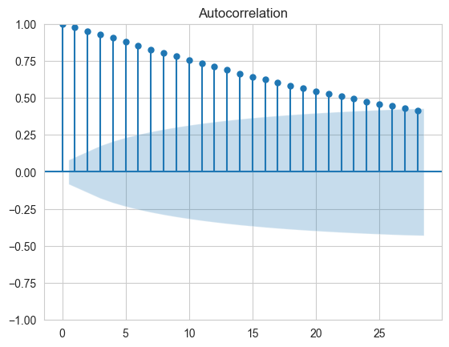
De acuerdo a los resultado de la prueba Mann-Kendall para evaluar tendencias monotónicas, la serie de casos por semana epidemiológica no sigue una tendencia, con valores de estadísticos significativos (p<0.001), indicando una tendencia descendente significativa, con una correlación negativa débil.
Las rupturas estructurales de la serie, se presentan en abril del 2016 con una caída, octubre del 2018 donde empieza el alza de casos, marzo del 2019 y febrero del 2020 con una caída abrupta de reportes, julio del 2021 donde se evidencia otra alza, diciembre del 2022 y agosto del 2023.
La autocorrelación ACF, indica que hay autocorrelación significativa en varios rezagos, que no se puede asumir independencia temporal.
Distribución de espacial de casos#
# [Test] Índice de Moran
#Unir con la geometría
dpto = gdf.merge(casos, on="departamento")
# Crear matriz de pesos contiguos
w = Queen.from_dataframe(dpto, use_index=False)
w.transform = "r" #
y = dpto['total_casos'].values
moran = Moran(y, w)
print("Índice de Moran:", moran.I)
print("Valor-p:", moran.p_sim)
('WARNING: ', 27, ' is an island (no neighbors)')
Índice de Moran: -0.000628614673085886
Valor-p: 0.365
c:\Users\Hp\anaconda3\envs\dengue\Lib\site-packages\libpysal\weights\contiguity.py:347: UserWarning: The weights matrix is not fully connected:
There are 2 disconnected components.
There is 1 island with id: 27.
W.__init__(self, neighbors, ids=ids, **kw)
# Contiguos
# Crear matriz de pesos (Queen contiguidad)
w = libpysal.weights.Queen.from_dataframe(dpto, use_index=False)
w.transform = "r"
moran_loc = Moran_Local(y, w)
# Signo de Moran local: High-High, Low-Low, Low-High, High-Low
dpto['HH'] = (moran_loc.q==1) & (moran_loc.p_sim < 0.05) # High-High
dpto['LL'] = (moran_loc.q==3) & (moran_loc.p_sim < 0.05) # Low-Low
dpto['HL'] = (moran_loc.q==2) & (moran_loc.p_sim < 0.05) # High-Low
dpto['LH'] = (moran_loc.q==4) & (moran_loc.p_sim < 0.05) # Low-High
# Crear una columna con el tipo de cluster
def cluster_label(row):
if row['HH']: return 'High-High'
elif row['LL']: return 'Low-Low'
elif row['HL']: return 'High-Low'
elif row['LH']: return 'Low-High'
else: return 'No Signif'
dpto['cluster'] = dpto.apply(cluster_label, axis=1)
# Definir colores
colors = {
'High-High':'red',
'Low-Low':'blue',
'High-Low':'orange',
'Low-High':'lightgreen',
'No Signif':'lightgrey'
}
# Graficar mapa
fig, ax = plt.subplots(1, 1, figsize=(10,10))
dpto.plot(color=dpto['cluster'].map(colors), edgecolor='black', ax=ax)
plt.title("Clusters de Moran Local")
plt.axis('off')
plt.show()
('WARNING: ', 27, ' is an island (no neighbors)')
c:\Users\Hp\anaconda3\envs\dengue\Lib\site-packages\esda\moran.py:1354: RuntimeWarning: invalid value encountered in divide
self.z_sim = (self.Is - self.EI_sim) / self.seI_sim
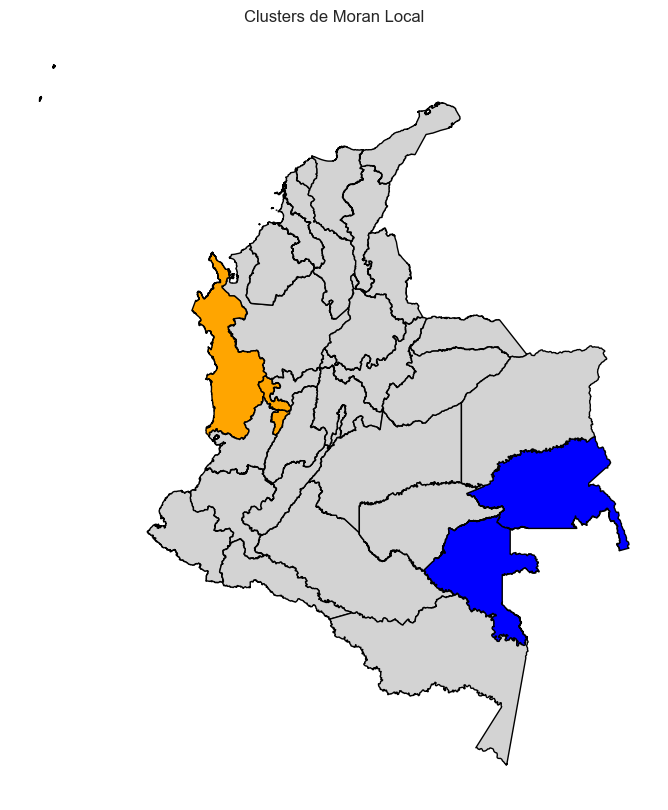
El índice de moran indica autocorrelación positiva moderada, es decir, que en los municipios con muchos casos tienden a estar cercanos entre sí, pero no es fuerte. Con el valor-p (0.009) se puede afirmar de que los casos se agregan especialmente en algunos municipios; es decir, los municipios con más casos tienden a estar cerca unos de otros. En el mapa se identifica el cluster de mayor foco de casos en los municipios de Soledad, Malambo y Galapa. El coldspots se identifica en el municipio de Santa Lucía.
De acuerdo al índice de moran, no existe una autocorrelación espacial de casos, no se representa un patrón espacial claro.
Los departamentos de Chocó, Cauca, Risaralda y Quindío, representan un bloque alto bajo de relación según el indice. Mientras que, Guainía y Vaupés son los coldspots de Colombia en casos de dengue.